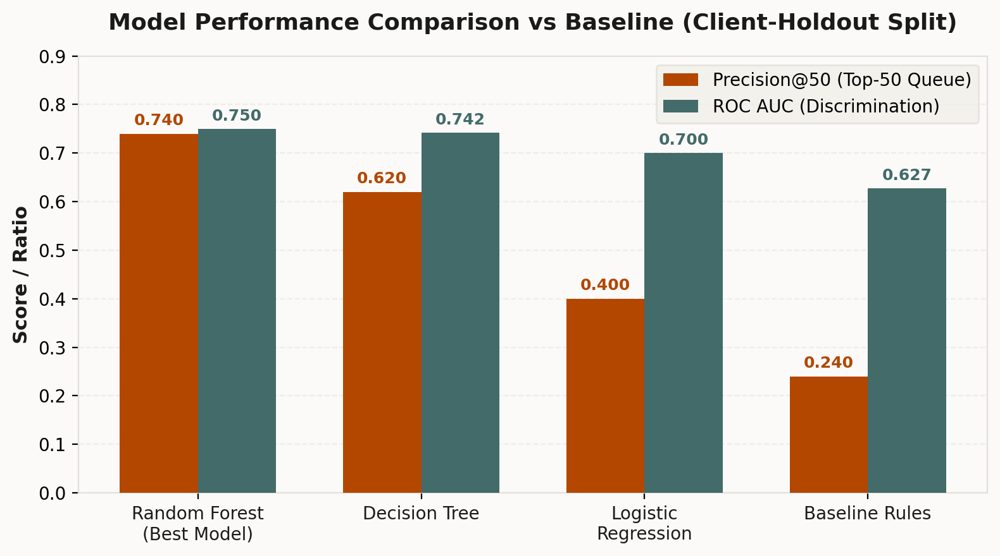
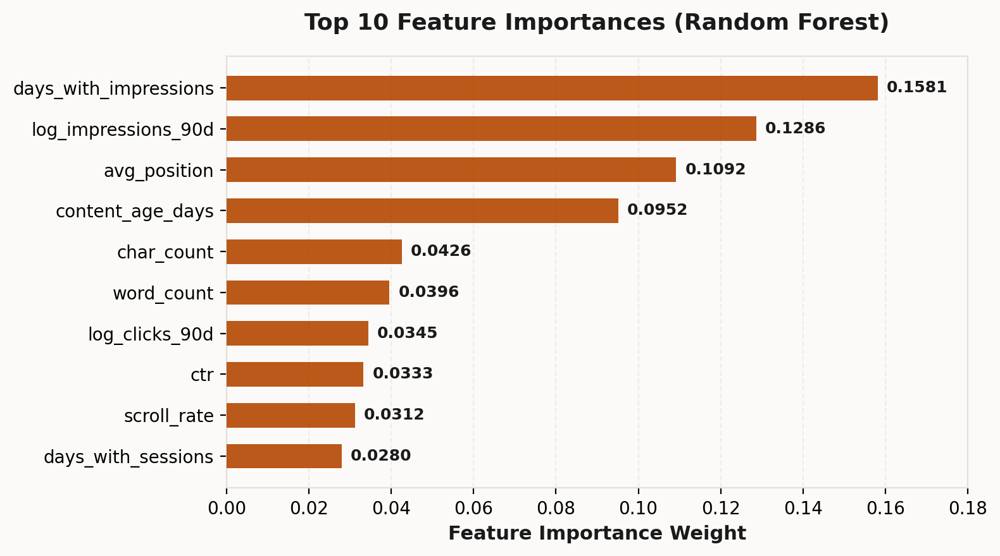

Prioritizing Content Refresh: A Decision-Support Model for FlyRank's Content Portfolio
Abstract
Content decay poses an ongoing operational challenge for digital publishers, requiring systematic identification of existing assets that require editorial refresh before organic performance degrades further. We evaluate a supervised machine learning framework trained on 30,000 anonymized content items to rank pages for content refresh review using a client-holdout validation design (27,675 training rows and 2,325 test rows across holdout clients). Comparing multiple classification algorithms against a heuristic baseline rule, a Random Forest model trained on 52 privacy-safe behavioral, freshness, and engagement signals achieved superior overall discrimination (ROC AUC 0.750 vs baseline 0.627). Under an honest client-holdout evaluation, the model achieved a Precision@50 of 0.740 (74.0% precision in top 50 recommendations) compared to 0.240 (24.0%) for rule-based heuristics against a target base declining rate of 54.2%. These measured results demonstrate that machine learning can substantially improve reviewer efficiency by prioritizing high-decline-risk pages for human editorial review without relying on client identity or unmasked URLs.
Introduction & Problem Statement
Digital content portfolios decay over time as search intent evolves, information becomes outdated, and competitor content emerges. For large-scale publishing operations managing thousands of active URLs, manually auditing every page on a recurring schedule is labor-intensive and inefficient. Editorial teams frequently struggle to allocate limited refresh capacity toward pages where interventions yield the highest return, leading to missed traffic opportunities and wasted resources on high-performing or unsalvageable content.
Machine learning provides a structured decision-support mechanism to address this triage problem. By modeling historical performance dynamics, click-through rates, impression stability, and scroll engagement across 30,000 anonymized pages, our scoring framework produces a prioritized queue of candidates requiring editorial attention. Rather than automating publishing decisions, the system acts as a reviewer aid—flagging pages with measured performance declines and visible search demand to maximize human editorial efficiency.
Data Summary & Scope
The empirical foundation for this study is derived from the anonymized FlyRank Content Refresh dataset (30,000 content item records). To maintain strict public-safety and privacy standards, all raw URLs, article titles, domain names, client brand names, and search query strings were omitted.
| Dataset Dimension | Specification | Public-Safety & Scope Note |
|---|---|---|
| Total Scored Volume | 30,000 pages | Anonymized content portfolio dataset |
| Target Positive Rate | 54.2% (16,262 rows) | Binary target: is_declining_label |
| Validation Split | Client Holdout (27,675 train / 2,325 test) | Evaluated on unseen client sites to test generalization |
| Observation Window | 90-day aggregate windows | Includes search impressions, clicks, sessions, and engagement |
| Feature Space | 52 numerical & encoded signals | Behavioral, freshness, visibility, and intent tiers |
| Excluded Fields | URLs, titles, domains, query strings | Strict zero-leakage and zero-PII policy |
Table 1 — Dataset parameters and scope specification (Source: work/outputs/capstone_metrics.json).
Methodology & Model Architecture
Our objective is to rank existing published assets according to their likelihood of requiring editorial refresh. Rather than relying on rigid static rules, we frame content decay identification as a supervised ranking problem supported by multi-signal classification.
Label Definition & Target Variable
The target label is_declining_label is a binary indicator identifying pages experiencing measured organic performance decay (negative traffic trajectory across consecutive 90-day observation windows). Out of 30,000 total scored rows, 16,262 rows meet the decline criteria, establishing a base rate of 54.2%.
Feature Representation (52 Signals)
The model processes 52 privacy-safe feature inputs categorized into four primary vectors:
- Traffic & Impression Volume: Log-transformed 90-day impressions (
log_impressions_90d), clicks (log_clicks_90d), sessions (log_sessions_90d), and active impression days (days_with_impressions). - Search Visibility & Engagement: Average SERP position (
avg_position), click-through rate (ctr), GA4 scroll depth rate (scroll_rate), user engagement rate (engagement_rate), and AI traffic percentage (ai_traffic_pct). - Content Freshness & Metadata: Content age in days (
content_age_days), days since last update (days_since_last_update), word count (word_count), and character count (char_count). - Categorical Tiers: One-hot encoded indicators for
competition_level,content_type,main_intent,age_tier,freshness_tier,word_count_tier,impression_tier, andposition_tier.
Baseline Rule Definition
To ensure rigorous evaluation, we benchmark machine learning models against a transparent heuristic rule (baseline_rules). The baseline flags pages with high demand (>= 500 impressions), declining trend, low CTR (< 0.5), or outdated content (> 180 days since update), producing a baseline score normalized between 0 and 100.
Validation Strategy & Leakage Control
We employ a strict Client Holdout Split (split_strategy: client_holdout). Entire client domains are isolated into the test set (2,325 rows) while training on remaining clients (27,675 rows). This prevents cross-client signal contamination. All features were audited to guarantee zero target leakage (no post-period metrics or label-derived variables are used as model inputs).
Empirical Results & Model Comparison
Evaluating all models under the identical Client Holdout Split (2,325 holdout evaluation rows), the Random Forest classifier demonstrated superior performance across discrimination, average precision, and top-queue concentration.
| Model Architecture | ROC AUC | Avg Precision | Precision@20 | Precision@50 | Precision@100 | Recall | F1 Score |
|---|---|---|---|---|---|---|---|
| Random Forest (Selected) | 0.750 | 0.618 | 0.650 | 0.740 | 0.720 | 0.744 | 0.640 |
| Decision Tree | 0.742 | 0.575 | 0.550 | 0.620 | 0.600 | 0.716 | 0.634 |
| Logistic Regression | 0.700 | 0.522 | 0.350 | 0.400 | 0.440 | 0.567 | 0.566 |
| Baseline Heuristic Rules | 0.627 | 0.468 | 0.150 | 0.240 | 0.360 | 0.189 | 0.274 |
Table 2 — Model comparison on client-holdout test set (Source: work/outputs/capstone_metrics.json).

Figure 1 — Performance comparison across model architectures. Random Forest achieves a Precision@50 of 0.740 (3.08x lift over baseline rules).
Feature Importance Analysis
Analyzing feature importances from the primary Random Forest model reveals that search impression consistency and overall impression volume exert the strongest predictive influence on performance decay risk:

Figure 2 — Top 10 feature importance weights derived from Random Forest (Source: work/notebooks/capstone.ipynb).
The top four predictors—days_with_impressions (0.1581), log_impressions_90d (0.1286), avg_position (0.1092), and content_age_days (0.0952)—account for over 49% of total model decision weight. Pages with declining active impression days and low position stability represent high-priority review candidates.
Limitations & Honest Framing
To maintain academic and professional credibility, the boundaries and explicit limitations of this model must be clearly stated:
- Proxy Target Definition: The target variable
is_declining_labelcaptures historical performance decay across 90-day observation windows. It operates as an operational proxy for content staleness and does not directly observe factual accuracy, editorial writing quality, or reader sentiment. - Observational Scope: All findings are strictly observational. Correlations between input signals (e.g.,
days_with_impressions) and performance outcomes do not imply causal relationships without controlled A/B experiment validation. - Domain Variance: Under a strict client-holdout evaluation, Precision@50 measured 0.740, representing a noticeable shift from random split metrics. This highlights domain-specific variation across different publishing portfolios.
- Single-Month Snapshot: The dataset reflects a single observation period. Seasonal traffic fluctuations or major search engine algorithm revisions require regular model retraining.
- Decision-Support Boundary: Model outputs serve solely as a decision-support tool for editorial reviewers, not as an automated publishing trigger.
Ranked Recommendations & Action Playbook
Out of 30,000 scored content items, the pipeline categorized 3,602 pages into the high-confidence queue (P80 final score threshold >= 63.6), 11,398 items into medium confidence, and 15,000 into low confidence.
Action Queue Breakdown
High decline risk with active search demand. Recommended for primary editorial update and freshness expansion.
Significant search impressions but low SERP click-through rate. Requires headline, title tag, and meta description review.
Solid impression volume but low GA4 scroll rate or engagement. Recommended for content depth restructuring.
High demand potential paired with short word count. Recommended for comprehensive content expansion.
Stable or growing traffic metrics. No immediate editorial action needed; scheduled for ongoing monitoring.
Top Priority Queue Preview
Below is a preview of the top 5 highest-priority refresh candidates from the final scoring pipeline:
| Rank | Final Score | Model Prob | Action Category | Impressions | Sessions | Trend |
|---|---|---|---|---|---|---|
| #1 | 81.6 / 100 | 0.782 | refresh_and_review_ctr | 12,834 | 66 | down |
| #2 | 81.4 / 100 | 0.788 | refresh_and_review_ctr | 8,064 | 23 | down |
| #3 | 81.4 / 100 | 0.847 | refresh_and_review_ctr | 2,498 | 9 | down |
| #4 | 81.0 / 100 | 0.774 | refresh_and_review_ctr | 13,790 | 27 | down |
| #5 | 80.9 / 100 | 0.815 | refresh_and_review_ctr | 3,393 | 5 | down |
Table 3 — Top 5 priority refresh queue candidates (Source: work/outputs/capstone_metrics.json).
Reproducibility
All code, data pipelines, and evaluation scripts are version-controlled and publicly accessible. The full analysis can be reproduced end-to-end from a clean clone of the repository using only the bundled anonymized dataset (no external BigQuery credentials or private data access required).
Repository & Pipeline
The canonical repository contains all scripts under scripts/. Running the complete pipeline takes approximately 30–60 seconds on a modern laptop:
git clone https://github.com/flyrank-bih/flyrank-ml-internship-starter
cd flyrank-ml-internship-starter
pip install -r requirements.txt
python scripts/run_all.pySource Notebooks
The analysis was developed across the following weekly milestone notebooks, each available via Colab or local Jupyter:
| Notebook | Week | Purpose |
|---|---|---|
| capstone.ipynb | Final | Capstone summary — question, data, results, limitations, recommendations |
| w03_data_contract.ipynb | Week 3 | Data contract definition, schema audit, and exclusion documentation |
| w04_baseline_score.ipynb | Week 4 | Baseline heuristic rule construction and initial Precision@50 evaluation |
| w05_model.ipynb | Week 5 | Model training (logistic regression, decision tree, random forest) |
| w06_validation_audit.ipynb | Week 6 | Validation audit under honest client-holdout split, leakage re-check |
| w07_action_playbook.ipynb | Week 7 | Action playbook construction, reason code assignment, queue exports |
All notebooks open directly in Google Colab via the badge links embedded at the top of each file.
Key Outputs
outputs/model_results.json— Full model metrics (all splits and models)outputs/summary.json— Pipeline summary with queue statisticsoutputs/refresh_queue.csv— Full ranked refresh queue (30,000 rows)work/outputs/capstone_metrics.json— Consolidated metrics referenced by this paper
Acknowledgments & Data Credit
Built on the FlyRank ML Internship dataset — flyrank.ai
This research paper was produced as part of the FlyRank ML Internship capstone assignment. The anonymized starter dataset was provided by FlyRank for educational and research purposes. All statistical modeling, feature engineering, validation design, and written analysis are original work.
The scoring pipeline and all supporting scripts were developed using open-source Python libraries: scikit-learn, pandas, numpy, and matplotlib. No proprietary tools, paid APIs, or client-identifying data are used at any stage of this pipeline.